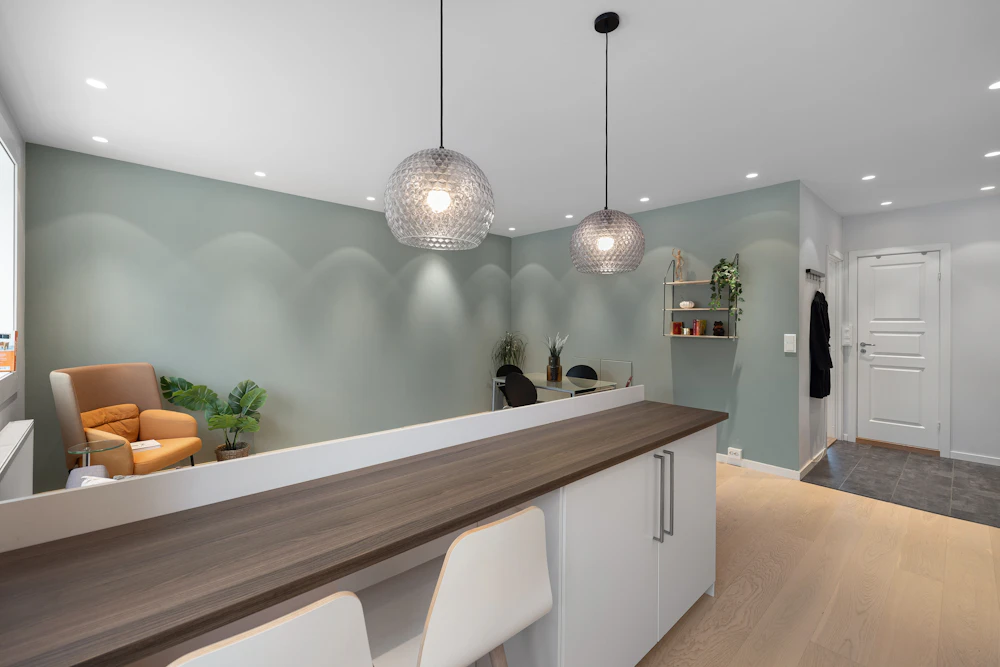

01
Allgemeine Sprechstunde
DetailsBei neuen Beschwerden, laufender Betreuung und Fragen rund um deine Gesundheit.
Hausärztliche Betreuung, Vorsorge und Beratung unter einem Dach, mit festem Ansprechpartner und einem Termin, der zu deinem Tag passt.
4,9 von 5 aus 280 Bewertungen

Über uns
Gute Medizin beginnt damit, dass Patienten gehört werden. Zu oft ist Versorgung zerstückelt: Eine Stelle berät, eine andere behandelt, eine dritte stellt das Rezept aus. Wir haben unsere Praxis so aufgebaut, dass diese Wege zusammenlaufen.
01
Bei neuen Beschwerden, laufender Betreuung und Fragen rund um deine Gesundheit.
02
Für regelmäßige Untersuchungen, Impfberatung und einen klaren Überblick über deine Werte.
03
Wir nehmen uns Zeit, Ergebnisse zu erklären und das weitere Vorgehen gemeinsam festzulegen.

Wir hören zuerst zu
Deine Beschwerden zählen, deine Sorgen auch. Wir fragen nach, bevor wir etwas empfehlen.
Wir erklären verständlich
Du bekommst praktische Hinweise ohne Fachchinesisch und ohne hastige Gespräche.
Wir planen gemeinsam
Jeder Plan richtet sich nach deinem Bedarf, deinen Prioritäten und den nächsten Schritten.
Wir bleiben erreichbar
Nach dem Termin geht die Betreuung weiter, mit Rückfragen, Unterlagen und Folgeterminen.
Das Team

Allgemeinmedizin
Innere Medizin

Kinder und Jugendmedizin

Unsere Abläufe sind darauf ausgelegt, Verwirrung zu vermeiden, Absprachen zu bündeln und dir Sicherheit bei Terminen und Rezepten zu geben.
Wir sagen dir ehrlich, wann ein Besuch in der Praxis besser ist als ein Anruf.
Dr. Anna Beispiel begleitet Patienten durch komplexe Gesundheitsfragen mit ruhigen Gesprächen und klaren Plänen. Ihr Ansatz verbindet Vorsorge, langfristige Betreuung und gemeinsame Entscheidungen.

Such dir eine Leistung, ein Fachgebiet oder eine Ärztin aus.
Wähle online oder per Telefon einen freien Termin, in der Praxis oder per Video.
Wir besprechen dein Anliegen, untersuchen und erklären, was als Nächstes ansteht.
Unterlagen, Rückfragen und Folgetermine sind auch nach dem Besuch geregelt.
Praxis und Rezeption arbeiten so zusammen, dass du nicht zwischen Stellen vermitteln musst. Das spart Wege, Wartezeit und Rückfragen.

Patientenstimmen
„Ich habe mich nie gehetzt gefühlt. Mein Arzt hat die Untersuchung klar erklärt und mir den nächsten Schritt genannt.“
Beispiel PatientinAllgemeine Sprechstunde
„Der Termin war online in einer Minute gebucht, und die Erinnerung am Vortag war genau richtig.“
Beispiel PatientVorsorge Check-up
„Alle Unterlagen lagen bereit, und am Empfang wusste man schon, worum es geht.“
Beispiel PatientinFolgetermin
ErstgesprächKennenlernen und Anliegen klären
30 Minuten
Häufig gebucht
Vorsorge Check-upÜberblick über deinen Gesundheitszustand
45 Minuten
FolgeterminKontrolle und kurze Besprechung
15 Minuten
Dauer und Abrechnung hängen von Anliegen und Versicherungsstatus ab. Die Angaben sind Beispiele.
Online über den Termin Knopf oder telefonisch zu den Sprechzeiten. Du bekommst sofort eine Bestätigung und am Vortag eine Erinnerung.
Deine Versichertenkarte, vorhandene Befunde, eine Liste deiner Medikamente und deine Fragen. Alles Weitere besprechen wir vor Ort.
Für Erstgespräche und Folgetermine bieten wir Videotermine an. Wenn eine Untersuchung nötig ist, sagen wir dir das ehrlich und laden dich in die Praxis ein.
Beschreibe beim Buchen kurz dein Anliegen. Wir ordnen es dem passenden Fachgebiet zu und nennen dir den nächsten freien Termin.
Das hängt von Anliegen und Versicherungsstatus ab. Wir nennen dir den Rahmen vor dem Termin. Hier steht im Projekt die echte Angabe der Praxis.
Bei lebensbedrohlichen Beschwerden wählst du sofort die 112. Außerhalb der Sprechzeiten hilft dir der ärztliche Bereitschaftsdienst unter 116 117.
Dein nächster Schritt
Hinterlasse Name und Telefonnummer, wir rufen dich innerhalb eines Werktags zurück und vereinbaren den Termin.